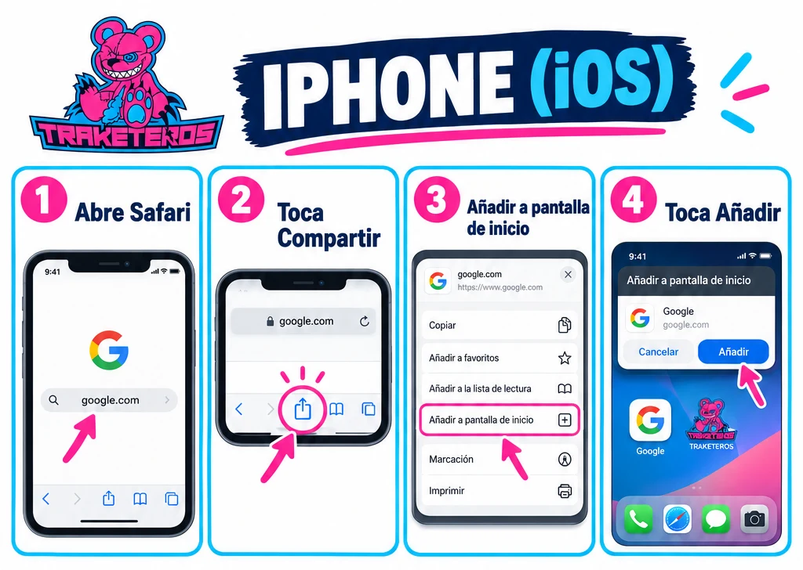
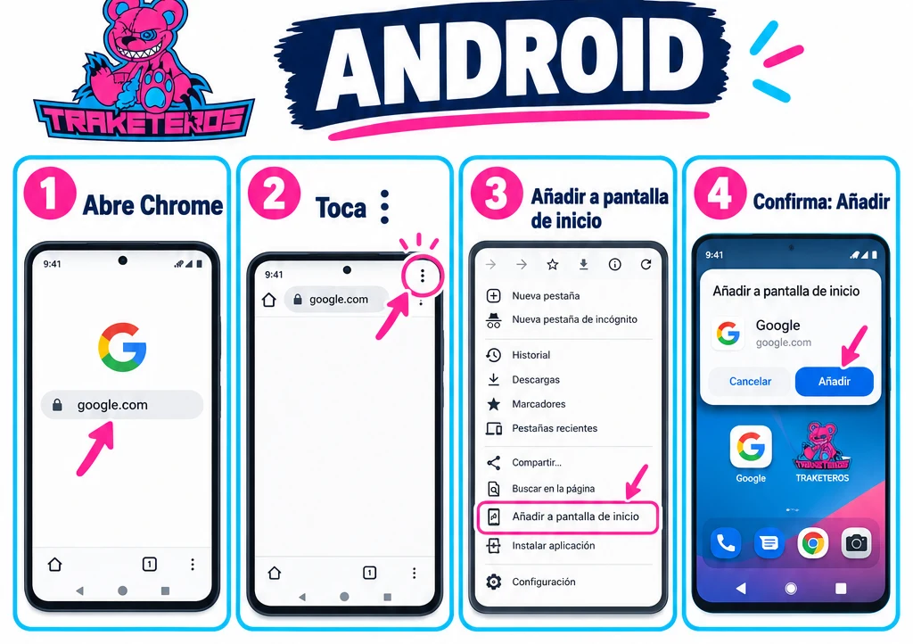

❓ AYUDA
¿No sabes ponerte la web en el móvil?
¿En serio, trozo de mierda? Es tocar cuatro cosas. Sigue los pasos de tu móvil y deja de dar pena, carapolla 🤦
📱 iPhone (iOS)

Safari, la puta brújula azul que teneis los de jaifon. Si ni eso encuentras, pídele a tu madre que te lo haga. 🧭
🤖 Android

Los tres puntitos de arriba a la derecha. No es muy dificil co
¿Todavía no te sale? Pues enhorabuena, eres el más retrasado de la peña. 🐌🍻
Volver al local